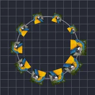

パスに沿ってリピート

直下のレイヤーの輪郭パスに沿って、レイヤーの複数のコピーを動的に生成します。
設定
| 設定項目 | 種類 | 範囲 | デフォルト |
|---|---|---|---|
| コピー数 | 数値 | 0〜150 | 25 |
| 開始 | 数値 | 0%〜100% | 0% |
| 終了 | 数値 | 0%〜100% | 100% |
| フェーズ | 数値 | -99900%〜99900% | 0% |
| 接線 | オン／オフ | – | オフ |
| 範囲位置 | ポイント（X, Y） | -99999〜99999 | 0, 0 |
| 範囲スケール | 数値 | 0〜10 | 1 |
| 範囲回転 | 角度 | -3600°〜3600° | 0° |
| 範囲不透明度 | 数値 | 0%〜100% | 100% |
| 塗りの色 | 色 | – | #FFFFFF |
| 塗りの量 | 数値 | 0%〜100% | 0% |
| 範囲開始 | 数値 | 0%〜100% | 0% |
| 範囲終了 | 数値 | 0%〜100% | 100% |
| 範囲オフセット | 数値 | -1000%〜1000% | 0% |
| イージング | 選択 | リニア、イーズイン、イーズアウト、イーズインアウト | リニア |
| ランダム順 | オン／オフ | – | オフ |
| シード | 数値 | 0〜9999 | 0 |
| コピーごとの遅延 | 数値 | -60 s〜60 s | 0 s |
| ランダム位置 | ポイント（X, Y） | 0〜99999 | 0, 0 |
| ランダム回転 | 角度 | 0°〜3600° | 0° |
| ランダムスケール | 数値 | 0%〜1000% | 0% |
| ランダム不透明度 | 数値 | 0%〜100% | 0% |